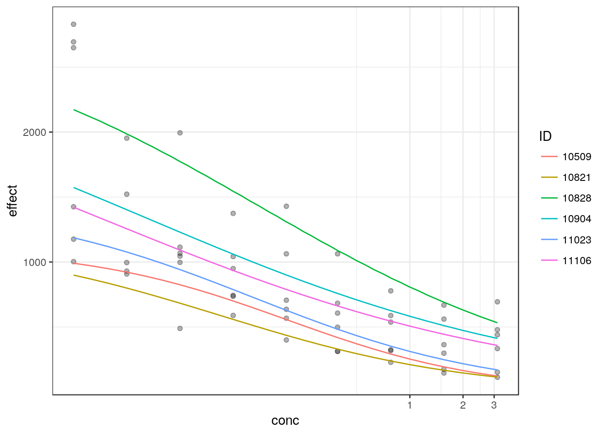
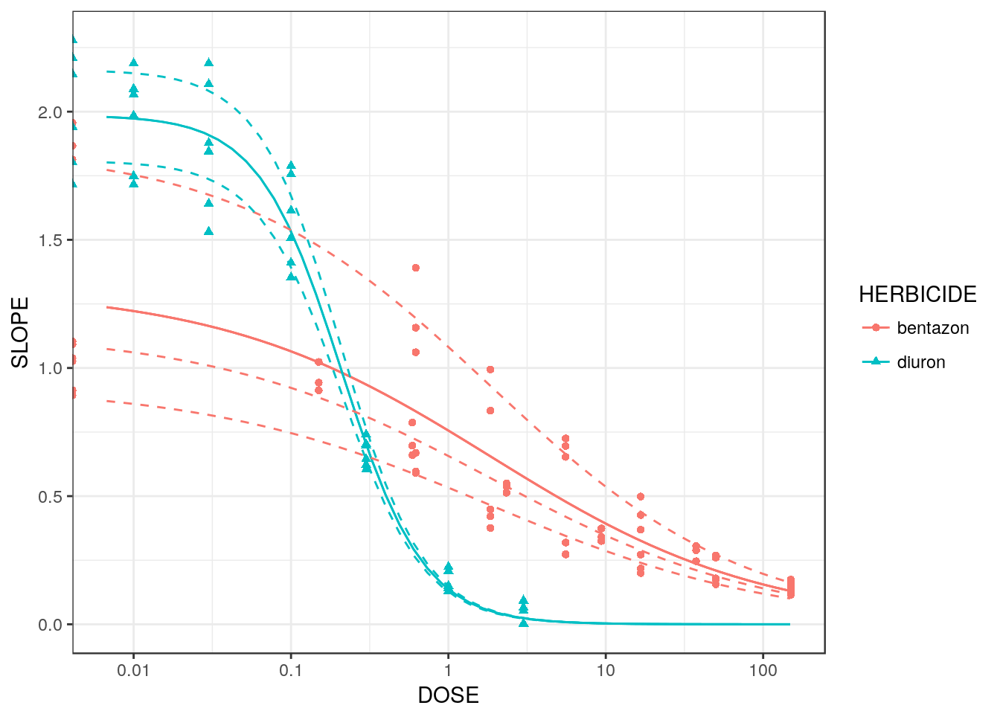
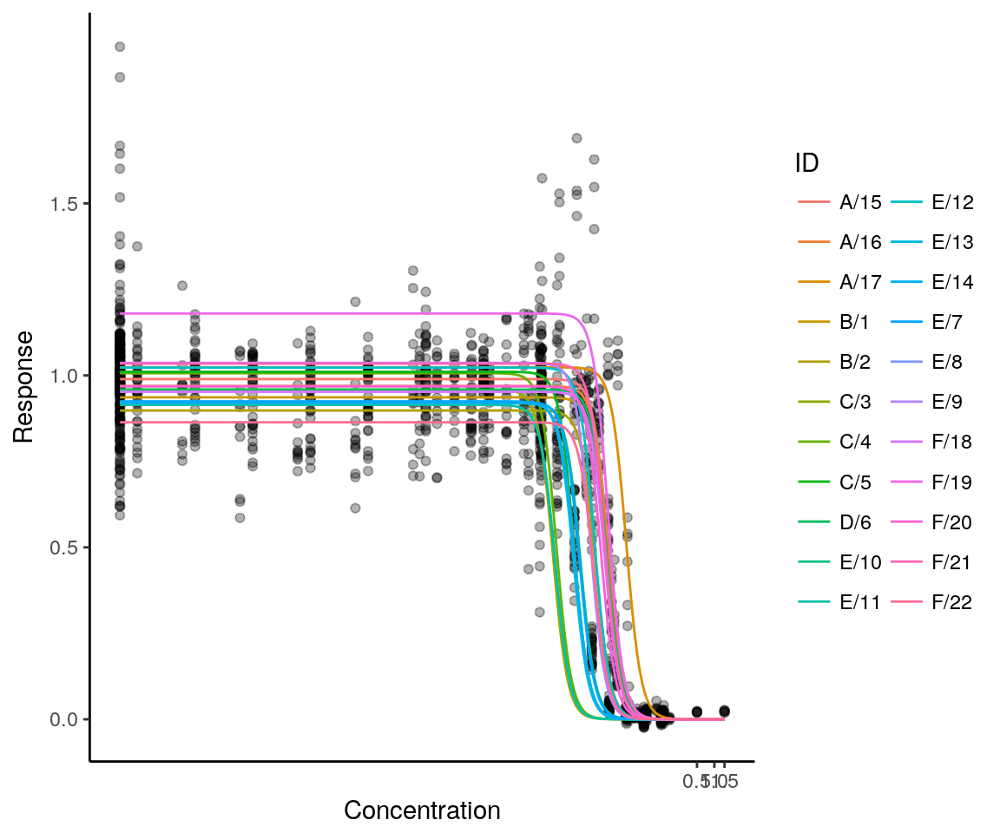

The analysis of dose-response experiments using nonlinear models allows inference about the model parameters and the prediction of new response values. A common way to summarize the effect of an increasing dose level on the response is deriving parameters from the dose-response curve, like the effective dose \(ED(p)\). Also the comparison of several curves by selectivity indices, like the relative potency, is available. For risk estimation in toxicology the estimation of benchmark dose (BMD) levels is a further important topic that is based on the nonlinear modeling of dose-response curves.
The drc package [Ritz et al., 2015] allows the simultaneous fitting of several non-linear regression models, providing a common parameterization for several models and searching automatically for starting values. Several functions are available for model-averaging and inference of derived parameters.
When analyzing dose-response curves, the observed data is often obtained from experiments with hierarchical designs, where the responses can be assigned to several known clusters. Instead of just assuming a single residual error in the dose-response model, the variability within and between clusters can be modeled. Either additional correlation parameters can be introduced to structure the residual error by generalized nonlinear least squares estimation or a distribution function for the cluster effects can be assumed separately to the distribution of the residuals in a mixed model framework.
The nlme package [Pinheiro and Bates, 2000] provides functions to estimate parameters and variance components in nonlinear mixed models by (restricted) maximum likelihood. Some functions to parameterize the non-linear curve are already available, but it is also possible to provide your own modeling function.
The medrc combines the automated dose-response modeling framework of the package drc with the nonlinear mixed estimation framework of the package nlme. Thereby, additional random effects can be introduced to the dose-response models with the unified parameterization of drc, with the availability of inference for derived parameters also for hierarchical models.
Following the notation of Davidian and Giltinan (1995, 2003), a nonlinear regression model with a single hierarchical level can be defined in two stages that parameterize the intra- and inter-curve specific variation, respectively.
Stage 1: For the ith individual (\(i=1,\dots,m\)), we assume the following nonlinear regression model: \[ y_{ij} = f(x_{ij}, \boldsymbol{\beta}_{i}) + \epsilon_{ij} \] where \(\{y_{i1}, \ldots, y_{i n_i} \}\) and \(\{x_{i1}, \ldots, x_{i n_i} \}\) denote the vectors of response values and dose levels, respectively. The population mean dose-response curve is characterized by the dose-response function \(f\) through curve-specific effect \(\boldsymbol{\beta}_{i}\) (a \(q \times 1\) vector). The residual error \(\epsilon_i\) is assumed to be mean-zero normally distributed with variance-covariance matrix \(\boldsymbol{\Lambda}_{i}\), which in practice often is assumed to be \(\sigma^2 I_{n_i}\) or \(diag(\sigma_1^2, \ldots, \sigma_{n_i}^2)\).
Stage 2: The inter-curve variation is captured by splitting the curve-specific effect \(\boldsymbol{\beta}_{i}\) into components describing the systematic and random variation between curves: \[ \boldsymbol{\beta}_{i} = \boldsymbol{A}_{i}\boldsymbol{\beta} + \boldsymbol{B}_{i}\boldsymbol{b}_{i} \] where \(\boldsymbol{A}_{i}\) and \(\boldsymbol{B}_{i}\) denote the fixed-effects and random-effects design matrices, respectively, \(\boldsymbol{\beta}\) denotes the fixed-effects parameters (a \(p \times 1\) vector with \(p \le q\)), and the \(b_i\)’s denote the curve-specific random effects. The random effects can be assumed to follow a mean-zero normal distribution with a variance-covariance matrix denoted \(\boldsymbol{G}\), which usually simply is the unstructured matrix.
We restrict our model to a fixed effects parameterization of independent curves, using a dummy 0 and 1 coded design matrix \(\boldsymbol{A}_{i}\), and allowing only random intercepts additively on the fixed effects parameters to represent the subject variability. This hierarchical model will cover many experimental settings in bioassay analysis and toxicology, like the comparison of several treatments in a dose-response experiment, where the responses are repeated measurements on the same experimental units or the experimental design consists of several blocks.
A flexible two-stage estimation approach is available with the function , that combines estimates from individual fits using the R package [Viechtbauer, 2010]. As a restriction, the function can include only a single random grouping factor in the second stage.
To fit a hierarchical dose-response model with the Lindstrom-Bates algorithm, the medrm function provides a wrapper around the function nlme (package nlme), providing a function interface similar to drc, but adding a random and correlation argument to define the hierarchical structure of the experimental design.
Instead of interpreting the model parameters directly, we can set focus on derived parameters, like the effective dose at a specific level \(ED(p)\) or the ratio of two effective doses, known as relative potency. The effective dose \(ED(p)\) is defined as the solution to the following inverse regression problem: \[ f(ED(p), \boldsymbol{\beta}) = \frac{p}{100} f(\infty, \boldsymbol{\beta}_{i}) + \left( 1 - \frac{p}{100} \right) f(0, \boldsymbol{\beta}_{i}) \] By definition \(ED(p)\) values are relative quantities, relative to the lower and upper limits \(\beta_2\) and \(\beta_3\), which corresponds to \(f(0, \boldsymbol{\beta}_{i})\) and \(f(\infty, \boldsymbol{\beta}_{i})\), respectively, if \(\beta_1<0\) (otherwise \(\beta_2\) and \(\beta_3\) swap places). The function ED() of package drc can be directly used with an medrc object to calculate the effective dose at (multiple) response levels conditional on random effects being equal to zero. Inference for the \(ED(p)\) parameters, like hypotheses tests or corresponding confidence intervals, are available by using the Delta-method to approximate the variance-covariance of the derived parameters.
Another important concept used for summarizing dose-response data is the benchmark dose methodology. Ritz et al. (2013) proposed an operational definition of the benchmark dose concept for continuous endpoints, allowing for the incorporation of an a priori specified background level \(p_0\) and benchmark response of interest BMR. The resulting BMD is obtained by solving the following equation:
\[ \left[ \Phi^{-1}(1-p_0) - \Phi^{-1}\{1-(p_0+BMR)\} \right] \frac{\sigma}{f(\infty,\boldsymbol{\beta}_{i}) - f(0,\boldsymbol{\beta}_{i})} = \frac{f(BMD,\boldsymbol{\beta}_{i}) - f(0,\boldsymbol{\beta}_{i})}{f(\infty,\boldsymbol{\beta}_{i}) - f(0,\boldsymbol{\beta}_{i})}. \] By ignoring the variability in the ratio \(\sigma \{f(\infty,\boldsymbol{\beta}_{i}) - f(0,\boldsymbol{\beta}_{i})\}^{-1}\) this definition implies that benchmark doses may be derived in the same way as ordinary effective doses defined above by specifying the non-standard response level. The function BMD() enables the computation of the BMD and lower confidence bounds (BMDL) for a medrc object, given the benchmark risk and a background risk level.
By specifying the nonlinear function \(f(x_{ij}, \boldsymbol{\beta}_{i})\) the principle shape of the curve is treated as known. Without any prior knowledge about the progress of the dose-response curve it is reasonable to choose from a larger set of dose-response models instead of assuming a single fixed function. With a set of candidate models a specific dose-response relationship can be selected based on the data, or model averaging approaches can be used to incorporate the model uncertainty into the parameter inference.
The framework of package drc allows to fit several dose-response models to the same data in an automated fashion, with several, predefined dose-response curves, all of them composed of a similar set of similar defined parameters with lower and upper asymptotes, steepness, inflection points, etc. As these model functions can be directly used in medrc, the formula interfaces enable the composition of a set of models with different fixed and random effect parameterizations and different dose-response shapes.
Model-averaged inference for the effective dose is available by the function mmaED(), allowing the input of several medrc model objects. By default the model parameters are estimated by maximum likelihood; it is not adviced to use the model averaging approach with REML estimates. Furthermore, only models with changes in the fixed effect parameterization OR the random effect structure should be combined.
Nellemann et al. (2003) carried out experiments to assess the in vitro effects of the fungicide vinclozolin. The data were obtained using an androgen receptor reporter gene assay, which was repeated six times (on different days). Each assay resulted in concentration-response data with nine concentrations (in \(\mu\) M) of the fungicide, and the response measured was chemiluminescence (in luminescence units), so the same nine concentrations were used in all six assays. However, in one assay, only eight concentrations were used.
The dataset is available in the package drc.
data(vinclozolin)Assuming a lower asymptote at 0 for the control, a three parameter log-logistic model can be assumed, estimating the upper asymptote, location of the inflection point, and steepness of the curve. The assay effect is treated as a normally distributed random effect, summarizing the between-assay variability by a \((3 \times 3)\) covariance matrix.
# meta analysis approach
m1 <- metadrm(effect ~ conc,
data=vinclozolin,
fct=LL.3(),
ind=exper,
struct="UN")
summary(m1)##
## Two-stage meta-analysis dose-response model
## Model fitted: Log-logistic (ED50 as parameter) with lower limit at 0
##
## Call:
## metadrm(formula = effect ~ conc, fct = LL.3(), ind = exper, data = vinclozolin,
## struct = "UN")
##
## Variance estimates:
## estim sqrt
## tau^2.1 0.0316 0.1779
## tau^2.2 687783.0025 829.3268
## tau^2.3 0.0069 0.0830
##
## rho.b:(I rho.d:(I rho.e:(I
## b:(Intercept) 1 -0.8745 0.9315
## d:(Intercept) -0.8745 1 -0.6382
## e:(Intercept) 0.9315 -0.6382 1
##
##
## Coefficients:
## Estimate Std.Err t value Pr(>|t|)
## b:(Intercept) 5.4042e-01 7.8816e-02 6.8567 5.444e-06 ***
## d:(Intercept) 1.9684e+03 3.4108e+02 5.7711 3.692e-05 ***
## e:(Intercept) 1.0312e-01 3.6090e-02 2.8573 0.01199 *
## ---
## Signif. codes: 0 '***' 0.001 '**' 0.01 '*' 0.05 '.' 0.1 ' ' 1# nonlinear mixed-effects model
m2 <- medrm(effect ~ conc, data=vinclozolin,
random=b + d + e ~ 1|exper,
fct=LL.3(), start=c(0.5, 2000, 0.05))
summary(m2)## Nonlinear mixed-effects model fit by maximum likelihood
## Model: effect ~ meLL.3(conc, b, d, e)
## Data: data
## AIC BIC logLik
## 701.4922 721.1951 -340.7461
##
## Random effects:
## Formula: list(b ~ 1, d ~ 1, e ~ 1)
## Level: exper
## Structure: General positive-definite, Log-Cholesky parametrization
## StdDev Corr
## b 0.15223468 b d
## d 758.88844284 -0.893
## e 0.06969997 0.859 -0.537
## Residual 100.08932805
##
## Fixed effects: b + d + e ~ 1
## Value Std.Error DF t-value p-value
## b 0.5382 0.0706 45 7.625316 0.0000
## d 1987.3050 321.4828 45 6.181683 0.0000
## e 0.1014 0.0322 45 3.144827 0.0029
## Correlation:
## b d
## d -0.819
## e 0.811 -0.517
##
## Standardized Within-Group Residuals:
## Min Q1 Med Q3 Max
## -1.94016266 -0.51822539 -0.09182678 0.49873493 2.20628241
##
## Number of Observations: 53
## Number of Groups: 6The effective doses can be estimated at several response levels, conditional on random effects being equal to zero, using the function ED().
ED(m1, respLev=c(15, 50, 85))##
## Estimated effective doses
##
## Estimate Std. Error
## e::15 0.0041628 0.0032620
## e::50 0.1031209 0.0360903
## e::85 2.5545035 0.6718647ED(m2, respLev=c(15, 50, 85))##
## Estimated effective doses
##
## Estimate Std. Error
## e:1:15 0.0040369 0.0027667
## e:1:50 0.1013631 0.0313062
## e:1:85 2.5451269 0.6139681medrc provides an automated plot method for the nlme objects using ggplot2.
plot(m2, logx=TRUE, ndose=25, ranef=TRUE) +
theme_bw()
Streibig and Dayan (1999) investigated the inhibition of photosynthesis in response to two synthetic photosystem II inhibitors, the herbicides diuron and bentazon. In an experiment, the effect of oxygen consumption of thylakoid membranes (chloroplasts) from spinach was measured after incubation with the synthetic inhibitors in five assays, three treated with bentazon and two with diuron. For each assay six increasing herbicide concentrations were applied together with a negative control, using different dose ranges on a logarithmic scale for the two treatments based on preliminary experiments to encompass the whole dose-response range.
The dataset is available in the package drc.
data(spinach)
spinach$CURVE <- as.factor(spinach$CURVE)For the comparison of the two herbicides, two dose-response curves are fitted under assumption of a three parameter log-logistic model with a separate set of fixed effects coefficients for each treatment. Random effects are included for each of the three parameters to model the between assay variability. Using the information of the between assay variability by the additional distributional assumptions of the random intercepts is especially advantageous, as the dose levels for the two herbicides do not cover the same dose range.
As for the Vinclozolin example, either a nonlinear mixed model or a generalized nonlinear least-squares model can be fitted.
# meta analysis approach
sm1 <- metadrm(SLOPE ~ DOSE,
data=spinach,
fct=LL.3(),
ind=CURVE,
cid2=HERBICIDE,
struct="UN")
summary(sm1)##
## Two-stage meta-analysis dose-response model
## Model fitted: Log-logistic (ED50 as parameter) with lower limit at 0
##
## Call:
## metadrm(formula = SLOPE ~ DOSE, fct = LL.3(), ind = CURVE, data = spinach,
## cid2 = HERBICIDE, struct = "UN")
##
## Variance estimates:
## estim sqrt
## tau^2.1 0.0005 0.0221
## tau^2.2 0.1856 0.4308
## tau^2.3 0.0000 0.0009
##
## rho.b:(I rho.d:(I rho.e:(I
## b:(Intercept) 1 1.0000 -1.0000
## d:(Intercept) 1.0000 1 -1.0000
## e:(Intercept) -1.0000 -1.0000 1
##
##
## Coefficients:
## Estimate Std.Err t value Pr(>|t|)
## b:bentazon 0.5021926 0.0252658 19.8764 9.590e-09 ***
## b:diuron 1.6572431 0.1154678 14.3524 1.654e-07 ***
## d:bentazon 1.3091412 0.2495357 5.2463 0.0005303 ***
## d:diuron 1.9858581 0.3056732 6.4967 0.0001119 ***
## e:bentazon 1.7452319 0.1716524 10.1672 3.116e-06 ***
## e:diuron 0.2086242 0.0091462 22.8100 2.840e-09 ***
## ---
## Signif. codes: 0 '***' 0.001 '**' 0.01 '*' 0.05 '.' 0.1 ' ' 1### nlme
sm2 <- medrm(SLOPE ~ DOSE,
curveid=b + d + e ~ HERBICIDE,
data=spinach,
fct=LL.3(),
random = b + d + e ~ 1|CURVE,
start=c(0.5, 1, 1.5, 1.5, 1.5, 0.3))
summary(sm2)## Nonlinear mixed-effects model fit by maximum likelihood
## Model: SLOPE ~ meLL.3(DOSE, b, d, e)
## Data: data
## AIC BIC logLik
## -200.9121 -166.4107 113.4561
##
## Random effects:
## Formula: list(b ~ 1, d ~ 1, e ~ 1)
## Level: CURVE
## Structure: General positive-definite, Log-Cholesky parametrization
## StdDev Corr
## b.(Intercept) 1.936461e-02 b.(In) d.(In)
## d.(Intercept) 3.294869e-01 1
## e.(Intercept) 4.173550e-12 0 0
## Residual 7.278869e-02
##
## Fixed effects: list(b ~ HERBICIDE - 1, d ~ HERBICIDE - 1, e ~ HERBICIDE - 1)
## Value Std.Error DF t-value p-value
## b.HERBICIDEbentazon 0.5028197 0.02830093 95 17.766899 0
## b.HERBICIDEdiuron 1.6587325 0.08678366 95 19.113418 0
## d.HERBICIDEbentazon 1.3105896 0.19737050 95 6.640251 0
## d.HERBICIDEdiuron 1.9859080 0.24078961 95 8.247482 0
## e.HERBICIDEbentazon 1.8477691 0.20496373 95 9.015103 0
## e.HERBICIDEdiuron 0.2085488 0.00749736 95 27.816304 0
## Correlation:
## b.HERBICIDEb b.HERBICIDEd d.HERBICIDEb d.HERBICIDEd
## b.HERBICIDEdiuron 0.000
## d.HERBICIDEbentazon 0.372 0.000
## d.HERBICIDEdiuron 0.000 0.125 0.000
## e.HERBICIDEbentazon 0.412 0.000 -0.082 0.000
## e.HERBICIDEdiuron 0.000 0.228 0.000 -0.042
## e.HERBICIDEb
## b.HERBICIDEdiuron
## d.HERBICIDEbentazon
## d.HERBICIDEdiuron
## e.HERBICIDEbentazon
## e.HERBICIDEdiuron 0.000
##
## Standardized Within-Group Residuals:
## Min Q1 Med Q3 Max
## -3.255291696 -0.517514826 -0.005061123 0.617135693 2.694079415
##
## Number of Observations: 105
## Number of Groups: 5The two fixed effect curves are compared by the ratio of effective dose estimates.
cmat <- rbind(c(1, 1),
c(2, 2),
c(3, 3))
# comparing effective dose levels for meta analysis
EDcomp(sm1,
percVec=c(15, 50, 85),
percMat=cmat,
interval="fieller")##
## Estimated ratios of effect doses
##
## Estimate Lower Upper
## bentazon/diuron:15/15 0.75332 0.40454 1.15956
## bentazon/diuron:50/50 8.36543 6.39896 10.49810
## bentazon/diuron:85/85 92.89635 49.81637 143.18800# comparing effective dose levels for nlme
EDcomp(sm2,
percVec=c(15, 50, 85),
percMat=cmat,
interval="fieller")##
## Estimated ratios of effect doses
##
## Estimate Lower Upper
## bentazon/diuron:15/15 0.80056 0.39510 1.23745
## bentazon/diuron:50/50 8.86013 6.90605 10.89971
## bentazon/diuron:85/85 98.05903 63.37847 135.24172The predicted curves can be plotted:
library(dplyr)
library(tidyr)
pdata <- spinach %>%
group_by(CURVE, HERBICIDE) %>%
expand(DOSE=exp(seq(-5, 5, length=50)))
pdata$SLOPEind <- predict(sm2, newdata=pdata)
pdata$SLOPE <- predict(sm2, newdata=pdata, level=0)
ggplot(spinach, aes(x=log(DOSE), y=SLOPE,
colour=HERBICIDE, group=CURVE, shape=HERBICIDE)) +
geom_point() +
geom_line(data=pdata) +
geom_line(data=pdata, aes(y=SLOPEind), linetype=2) +
theme_bw() +
scale_x_continuous("DOSE",
breaks=log(c(0.01, 0.1, 1, 10, 100)),
labels=c(0.01, 0.1, 1, 10, 100))
The toxicity of sodium valproate was tested, using the 3T3 mouse fibroblasts and neutral red uptake (NRU) assay. 22 different experiments were performed independently in six laboratories, using eight concentration levels, each with six replicates on a 96-well plate. In addition, twelve measurements were taken for the solvent control. See Clothier et al. (2013) for more information.
data(mdra)A 3-parameter log-logistic model was fitted with two levels of hierarchical random effects, treating the laboratory effect and the experiment effect on the upper asymptote and on the ED50 parameter as a random effect. In this way, the hierarchical layout of the data is represented, modelling the variability between laboratories and between experiments within a laboratory. No random laboratory or experiment variation is assigned to the slope parameters in order to reduce model complexity and ensure convergence of the parameter estimation algorithm.
mdramod <- medrm(Response ~ Concentration, data=mdra, fct=LL.3(),
random=d + e ~ 1|LabID/ExperimentID,
weights=varExp(form=~Concentration),
control=nlmeControl(tolerance=0.1, pnlsTol=1))
plot(mdramod, logx=TRUE, ndose=250, ranef=TRUE) + theme_classic()
Clothier, R., Gomez-Lechon, M. J., Kinsner-Ovaskainen, A., Kopp-Schneider, A., O’Connor, J. E., Prieto, P., and Stanzel, S. (2013). Comparative analysis of eight cytotoxicity assays evaluated within the ACuteTox Project. Toxicology in vitro, 27(4):1347–1356.
Davidian, M. and Giltinan, D. M. (1995). Nonlinear Models for Repeated Measurement Data. Chapman & Hall/CRC Monographs on Statistics & Applied Probability, London.
Davidian, M. and Giltinan, D. M. (2003). Nonlinear models for repeated measurement data: An overview and update. Journal of Agricultural, Biological, and Environmental Statistics, 8(4):387–419.
Nellemann, C., Majken, D., Lam, H. R., and Vinggaard, A. M. (2003). The Combined Effects of Vinclozolin and Procymidone Do Not Deviate from Expected Additivity in Vitro and in Vivo. Toxicological Sciences, 71(2):251–262.
Pinheiro, J. C. and Bates, D. M. (2000). Mixed-Effects Models in S and S-Plus. Statistics and Computing. Springer.
Ritz, C., Gerhard, D., and Hothorn, L. A. (2013). A Unified Framework for Benchmark Dose Estimation Applied to Mixed Models and Model Averaging. Statistics in Biopharmaceutical Research, 5(1):79–90.
Ritz, C., Baty, F., Streibig, J. C., & Gerhard, D. (2015). Dose-response analysis using R. PLoS ONE, 10(12), e0146021. https://doi.org/10.1371/journal.pone.0146021
Streibig, J. C. and Dayan, F. E. (1999). Joint action of natural and synthetic photosystem II inhibitors. Pesticide Science, 146(1998):137–146.
Viechtbauer, W. (2010). Conducting Meta-Analyses in R with the metafor Package. Journal of Statistical Software, 36(3), 1–48. https://doi.org/10.18637/jss.v036.i03